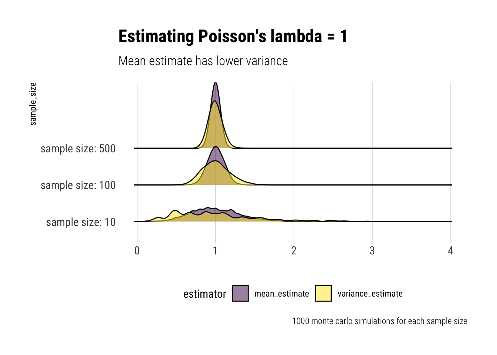
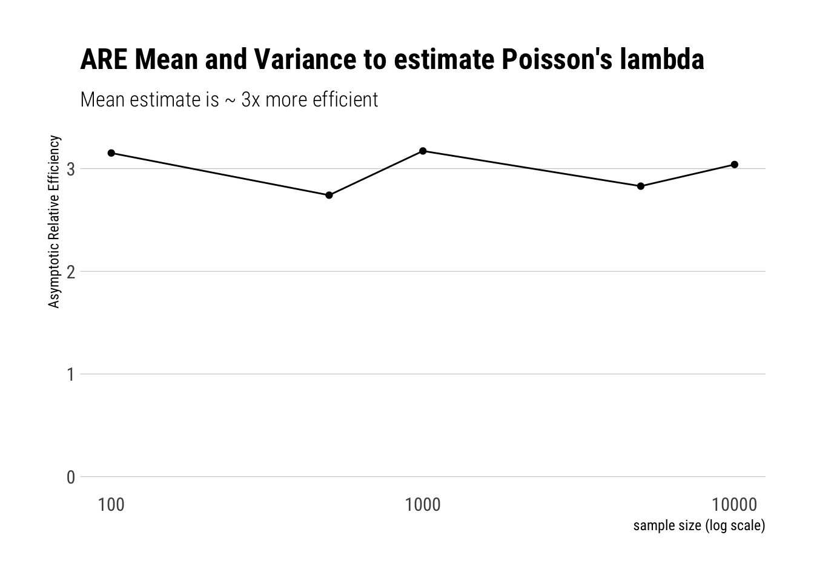
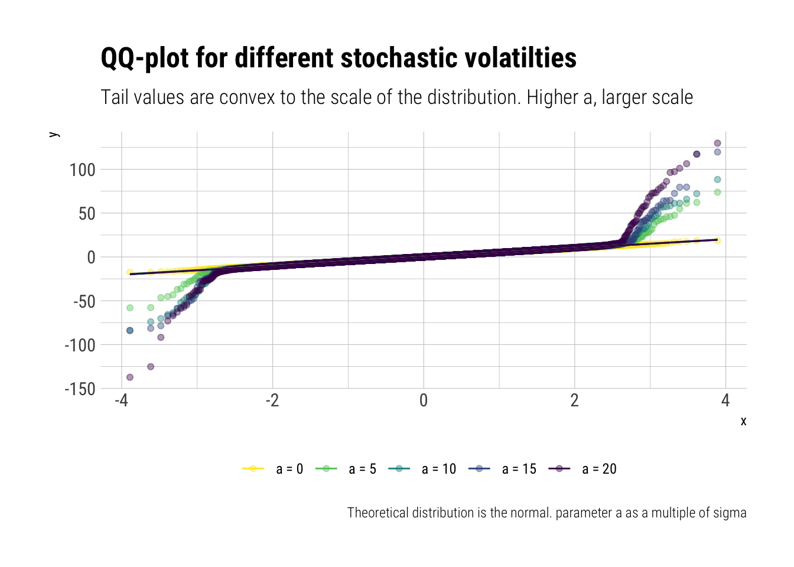
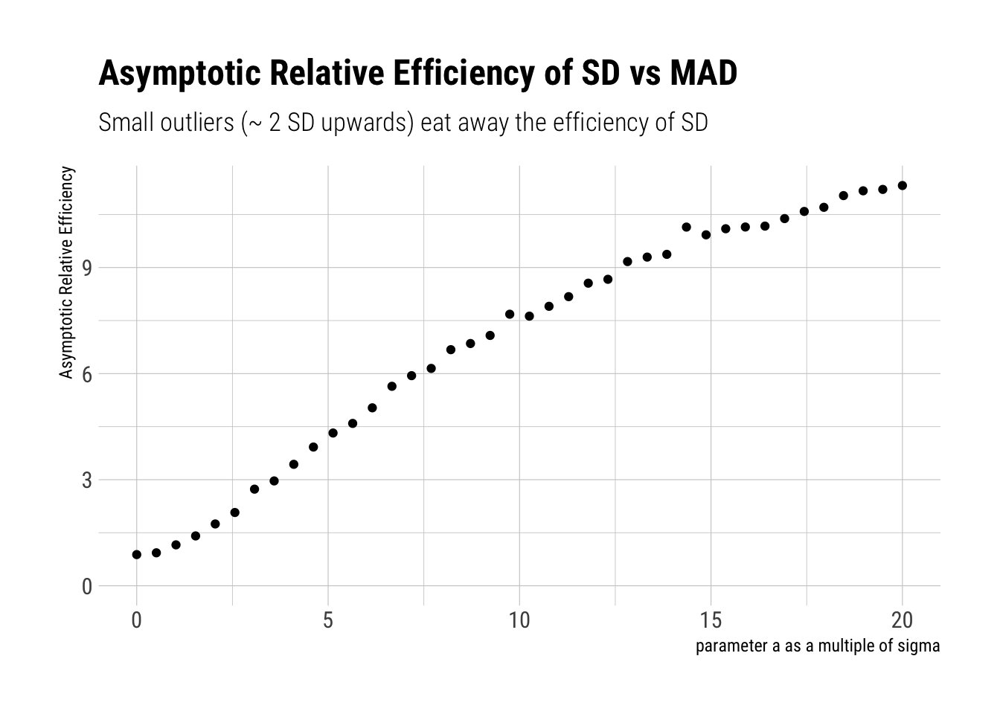
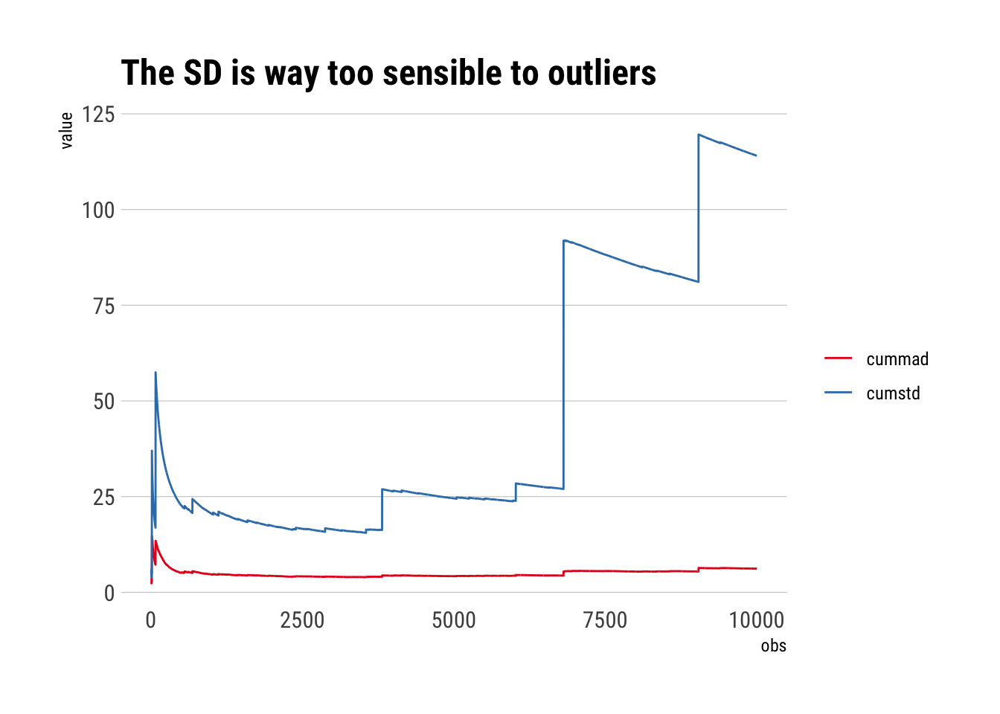

In this post, I’ll continue to explore with Monte-Carlo simulations the ideas in Nassim Taleb’s latest book: Statistical Consequences of Fat Tails. In other posts, I have look at the persistent small sample effect that plagues the mean estimates under fat tails as a consequence of the loooong pre-asymptotics of the law of large numbers. Also, how this in turn plagues other statistical techniques such as PCA. This time, I’ll explore what Taleb finds out by turning his attention to the much misunderstood standard deviation.
Standard deviation under Fat Tails
In Chapter 4 of his book, Taleb explores how Standard Deviation (SD) is problematic:
Widely misunderstood. People mistake Standard Deviation with Mean Absolute Deviation (MAD).
That this confusion is benign under thin tailed distributions but an unforgivable mistake under fat tails.
Let’s try to replicate the second point.
Game Plan
First, I’ll begin by exploring in what sense, under a Gaussian, the Standard Deviation (SD) is more “efficient estimator” than the Mean Absolute Deviation (MAD).
Secondly, in order to gauge the problems that start to arise with standard deviation (SD) as a measure of the scale of the distribution, Taleb uses the same trick as before: stochastize the volatility by switching between 2 normals with same means but different variances. The larger the difference between the variances, the fatter the tail of the resulting random variable. I tried to play with this idea in this post. Therefore, by analyzing the relationship between SD and MAD as we increase this difference, we get a type of derivative: as we increase the fat-tailedness, the difference between Standard Deviation (SD) and Mean Absolute Deviation (MAD) grows.
Efficiency in Mediocristan
When deciding between estimators, statistics textbooks end up talking about two asymptotic properties of the estimator: consistency and efficiency. Consistency concerns itself with the asymptotic accuracy of an estimator and efficiency with the asymptotic variance of the estimator. That is, consistency means that the estimator with lots of observations has a distribution tightly centered around the parameter. Whereas efficiency is something more esoteric but it means that the asymptotic variance is the lowest it can possibly be.
Efficiency under the Poisson
To get some intuition around why we should care about the variance of an estimator, let’s play with \(X \sim Poisson(\lambda)\). Note that \(E(X) = Var(X) = \lambda\). We could use either the estimate for the mean or the variance to estimate \(\lambda\). Which is better?
lambda_estimates <-function(size) { sample <-rpois(size, lambda =1) mean_estimate <-mean(sample) variance_estimate <-var(sample)data.frame(sample_size = size, mean_estimate, variance_estimate) }montecarlo_lambda <-function(size) {rerun(1000, lambda_estimates(size)) %>%bind_rows() %>%pivot_longer(-sample_size, names_to ="estimator", values_to ="estimate")}c(10, 100, 500) %>%map_df(montecarlo_lambda) %>%mutate(sample_size = glue::glue("sample size: {sample_size}")) -> lambda_est lambda_est %>%ggplot(aes(x = estimate, y = sample_size)) +geom_density_ridges(aes(fill = estimator), alpha =0.5, color ="black") + hrbrthemes::theme_ipsum_rc(grid ="X") +theme(legend.position ="bottom") +labs(x ="", title ="Estimating Poisson's lambda = 1",subtitle ="Mean estimate has lower variance",caption ="1000 monte carlo simulations for each sample size") +scale_fill_viridis_d()

Thus, even though both estimators put a lot of their mass close to the true value, the Mean estimate has a lower variance than the Variance estimate of \(\lambda\). And therefore is a safer bet to estimate the \(\lambda\) parameter with the mean. Indeed, there’s a mathematical bound for the variance of an estimator of \(\lambda\): \(\dfrac{\lambda}{n}\) which only the mean estimator satisties.
This is an important results: the variance estimate is too sensitive to outliers and we should prefer a natural weighting of the observations. However, with a Poisson and its thin tails, this is no big deal.
So far, we have talked about the intuition. If one wanted to compare the two estimator’s asymptotic efficiency, then one would compare the following ratio:
\[ \dfrac{(Var(S^2)}{Var(\bar{X})} \]
Which is the asymptotic Relative efficiency of the two estimators. That is, which of them has a lower variance as the number of available observations becomes increasingly large.
montecarlo_lambda_efficiency <-function(size) {rerun(1000, lambda_estimates(size)) %>%bind_rows() %>%pivot_longer(-sample_size, names_to ="estimator", values_to ="estimate") %>%group_by(sample_size, estimator) %>%summarise(variance_estimator =var(estimate))}c(100, 500, 1000, 5000, 10000) %>%map_df(montecarlo_lambda_efficiency) -> lambda_efficiencylambda_efficiency %>%pivot_wider(sample_size, names_from = estimator, values_from = variance_estimator) %>%mutate(are = variance_estimate/mean_estimate) %>%ggplot(aes(x = sample_size, y = are)) +geom_point() +geom_line() +scale_x_log10() +expand_limits(x =100, y =0) + hrbrthemes::theme_ipsum_rc(grid ="Y") +labs(x ="sample size (log scale)",y ="Asymptotic Relative Efficiency",title ="ARE Mean and Variance to estimate Poisson's lambda",subtitle ="Mean estimate is ~ 3x more efficient")

Efficiency under The Gaussian
Now let’s start playing with a Gaussian with known mean 0. Imagine you have to estimate the scale of the distribution, whatever that may mean. We have two candidates: the SD or the MAD. Which one should we prefer? Just as with the Poisson, let’s play with with some Monte-Carlo simulations and calculate the ARE:
Note that SD and MAD are estimating different measures of the scale of the distribution Therefore, instead of comparing their variances, we compare their coefficients of variation.
Great, as our results replicate what Taleb did with math.
Thus, in a strict sense, when we are dealing with samples of Gaussian, it is more efficient to use SD than MAD. However, what happens when we slip away into fatter-tails?
What happens to SD’s efficiency as we fatten the tails?
Taleb introduces an incredible heuristic ( which I already examined in this post ) that works perfectly to get the intuition of fattening a distribution. In Taleb’s words: “The equivalent of a functional derivative that provides good grasp for local sensitivities”
The heuristic is a simple switching between two gaussians with different standard deviations. Thus, we stochastize the variance of the distrbution. With probability \(1-p\), we switch to a \(Normal(0, \sigma)\); with probability \(p\), we switch to \(Normal(0, \sigma \sqrt{(1+a)})\).
That is, if \(p\) is small, there’s a tiny probability that we switch to a gaussian with a higher standard deviation and that will likely generate outliers in comparison to the rest of the distribution. The higher \(a\), the larger the scale of the distribution. Thus, given that the tail probabilities are convex to the scale of the distribution, the higher \(a\), the more we fatten the distribution. Let’s sample from this distribution to have a quick look:
# simulate fattenedfatten_simulations <-function(samples, a, p, sigma =1) {# create vector to store sims sims <-vector(length = samples)# sample with probability p p_location <-rbernoulli(samples, p = p) sims[p_location] <-rnorm(sum(p_location), sd = sigma *sqrt(1+a)) sims[!p_location] <-rnorm(sum(!p_location), sd = sigma)return(sims)}samples <-10000# simulated fatteneda_s <-seq(0, 100, length.out =5)names(a_s) <-unlist(map(a_s, ~ glue::glue("a = {.x/5}")))a_s%>%map_df(~fatten_simulations(samples, a = .x, p =0.01, sigma =5)) %>%mutate(simulation =1:samples) %>%pivot_longer(-simulation, names_to ="a_s") %>%mutate(a_s =fct_inorder(a_s)) -> fattend_different_asfattend_different_as %>%ggplot(aes(sample = value, color = a_s)) +stat_qq(alpha =0.4) +stat_qq_line() +scale_color_viridis_d(direction =-1) + hrbrthemes::theme_ipsum_rc() +labs(title ="QQ-plot for different stochastic volatilties",subtitle ="Tail values are convex to the scale of the distribution. Higher a, larger scale",color ="",caption ="Theoretical distribution is the normal. parameter a as a multiple of sigma") +theme(legend.position ="bottom")

Therefore, if we calculate the ARE for different values of \(a\), we are calculating its sensibility as we move close to fatter distributions. Let’s check whether SD keeps being more efficient than MAD:
fatten_estimates <-function(size, a, p, sigma) { sample <-fatten_simulations(size, a, p, sigma = sigma) standard_deviation <-sqrt(mean(sample^2)) mad <-mean(abs(sample)) data.frame(sample_size = size, standard_deviation, mad)}montecarlo_sigma_fattened <-function(size, a, p, sigma) {rerun(3000, fatten_estimates(size, a, p, sigma)) %>%bind_rows() %>%pivot_longer(-sample_size, names_to ="estimator", values_to ="estimate") %>%group_by(estimator) %>%summarise(variance_estimator =var(estimate)/mean(estimate)^2) %>%mutate(a = a)}a_s <-seq(0, 100, length.out =40)names(a_s) <-unlist(map(a_s, ~ glue::glue("a = {.x}")))a_s%>%map_df(~montecarlo_sigma_fattened (size =1000, a = .x, p =0.01, sigma =5)) ->fattened_arefattened_are %>%pivot_wider(a, names_from = estimator, values_from = variance_estimator) %>%mutate(are = standard_deviation/mad,a = a /5) %>%ggplot(aes(a, are)) +geom_point() +expand_limits(x =0, y =0) + hrbrthemes::theme_ipsum_rc() +labs(x ="parameter a as a multiple of sigma",title ="Asymptotic Relative Efficiency of SD vs MAD",subtitle ="Small outliers (~ 2 SD upwards) eat away the efficiency of SD",y ="Asymptotic Relative Efficiency")

Per Taleb:
A minute presence of outliers makes MAD more “efficient” than STD. Small “outliers” of 5 standard deviations cause MAD to be five times more efficient.
Therefore, as we move towards distribution with fatter tails, we move to a place where standard deviation is worse than useless: it is dangerous. The problem compounds as the tails are precisely convex to the scale of the distribution.
Thus, to estimate the tails with SD is to play with fire: we are verly likely to make mistakes that will compound at the part of the distribution that matters the most. As Taleb says, this is also one of the misunderstandings of the Black Swan: the problem is not only that the extreme plays a large role; but also that we can very easily produce bogus estimates of the probabilities at the tail.
Why?
The problem arises from the weighting that SD performs. The larger the observation, the even larger weight will have on the Standard Deviation. Whereas MAD uses a more natural weighting, where the weight is equal to each observation. This becomes evident if we examine the cumulative SD and cumulative MAD, where every once in a while we get an extreme value.
To simulate this, let’s sample from a Cauchy distribution where there is not even a defined first moment. In sample, however, we can calculate anything:
samples <-rcauchy(10000)cumstd <-sqrt(cumvar(samples))cummad <-cummean(abs(samples -cummean(samples)))data.frame(obs =1:10000, cumstd, cummad) %>%filter(obs >2) %>%pivot_longer(-obs) %>%ggplot(aes(obs, value)) +geom_line(aes(color = name)) + hrbrthemes::theme_ipsum_rc(grid ="Y") +scale_color_brewer(palette ="Set1") +labs(color ="",title ="The SD is way too sensible to outliers")

Conclusion
SD is only optimal in Mediocristan. When we start moving toward Extremistan, SD blows up due to being a sum of squares. Even relatively small deviations wash away the efficiency of SD over MAD. Thus, when dealing with fat-tails, SD should not be used as it can lead to very imprecise estimates of the probability at the tails. Thus, SD is not an appropriate measure of the scale of the distribution for fat tails. It is much better to use the MAD. That is, MAD is a better estimator of \(E(|X-\mu|)\) than SD as an estimator of \(\sigma\).